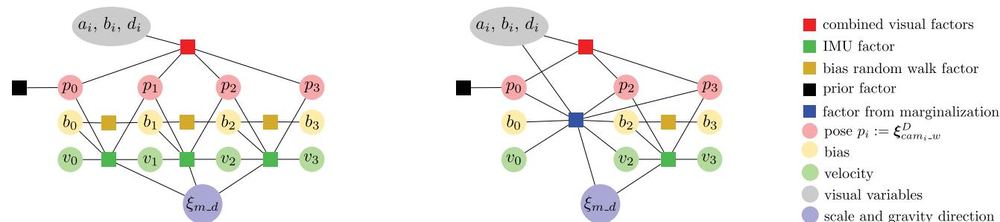
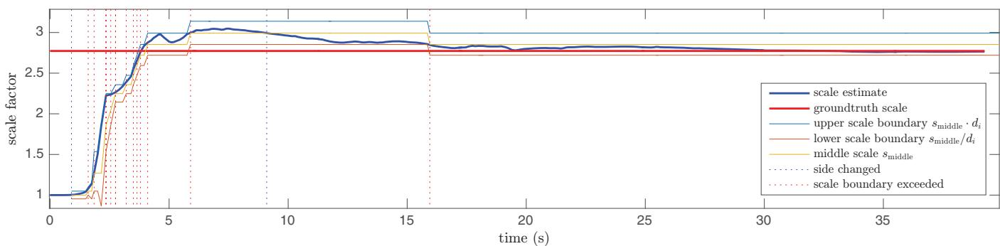
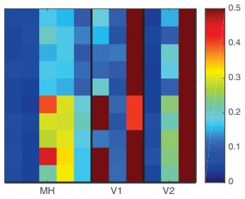
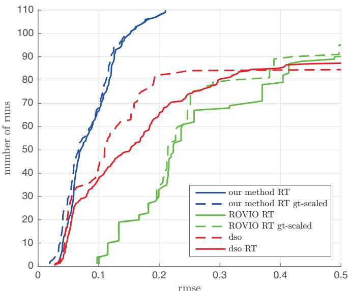

1. 为什么直接法配 IMU 这么难
本节目标
读完你应该能：说清「直接法 + IMU」的核心矛盾来自尺度何时收敛；复述 DSO 帧与度量帧两套坐标系的分工；讲透三个先验 $M_{\text{visual}}/M_{\text{curr}}/M_{\text{half}}$ 如何接力；复述视觉惯性初始化的四步；并诚实指出 VI-DSO 的实验强在哪、缺什么（特别注意：论文没给帧率数字）。
和前面课程怎么接
上一节 DSO 在「尺度归一」的 DSO 帧里做稀疏直接法，单目尺度不可观（呼应 Lesson 0024/0025 的 VO 不确定性）；IMU 能补上尺度与重力方向——这正是悬念⑤。但把 IMU 塞进 DSO 的滑动窗边缘化时，会撞上一个新问题：边缘化会把尺度「钉死」在旧线性化点，尺度一旦漂移，先验就给错信息。本节就拆这招。
DSO 之所以快又稳，一个重要设计是：所有位姿都在一个尺度归一（up-to-scale）的坐标系里优化，旧关键帧用舒尔补边缘化掉。但 IMU 测的是真实的米制加速度，它天然活在带真实尺度的度量帧里。麻烦来了——
- DSO 的滑动窗边缘化会给被边缘化状态留下一个关于「线性化点」的先验；其中就包含尺度的线性化点。
- 而 VI-DSO 的尺度是先随便初始化成 1.0、再边优化边收敛的。在尺度还没收敛时，这个先验已经把尺度锁在了错误的值上。
- 更糟的是：视觉能量项 $E_{\text{photo}}$ 与惯性误差项 $E_{\text{imu}}$ 没有公共残差（原文 eq.8），二者的变量通过 $T_{m-d}$ 才耦合，不能简单地「拼在一起优化」。
这就是「边缘化给错信息」：一个在旧尺度点线性化的先验，喂给还在漂移的优化器，会让系统不一致、甚至发散。下面两节先铺垫坐标系，再给出 VI-DSO 的巧妙解法。
互动判断
直接法配 IMU 的主要麻烦，根源在哪儿？
2. 两套坐标系：DSO 帧 vs 度量帧
VI-DSO 把世界显式表示成两种帧，并定义一个把二者连起来的变换：
- DSO 帧（尺度归一）：是度量帧的一个「缩放 + 旋转」版本。光度误差永远在 DSO 帧里算，所以不依赖尺度与重力方向——这正是 DSO 能即开即跑的原因。
- 度量帧（真实尺度）：IMU 的惯性误差必须用它，因为加速度、速度都是米制的。
- 优化变量（位姿 $\xi^D$、速度 v、偏置 b、逆深度 $d$）大部分在 DSO 帧；只有 $\xi_{m-d}$ 负责把 DSO 帧桥接到度量帧。尺度与重力方向被显式当成待优化量，所以可以用任意初始尺度开局，不必等它可观。

怎么看这张图：① (a) 是联合优化的因子图，视觉因子（把多关键帧连起来）与逐帧的 IMU 预积分因子并存；② (b) 边缘化掉关键帧 1 后，它变成连接剩余变量的「边际因子」；③ 注意位姿在 DSO 帧、IMU 因子在度量帧，靠 $\xi_{m-d}$ 桥接。
怎么看这张图：① 蓝色盒子的内容「不依赖尺度」；② 红色盒子的内容「必须依赖尺度」；③ 桥接变量 $\xi_{m-d}$ 是唯一同时出现在两侧的量，尺度与重力方向就藏在这里被联合优化。
要记住的一句话：不是「IMU 难接」，而是「边缘化先验把尺度的线性化点焊死在 DSO 帧里」才会出错——下一节的动态边缘化专治这一点。
3. ★ 动态边缘化（本篇核心）
边缘化本身没错，错在「把所有历史压进一个钉死尺度的先验」。VI-DSO 的解法很妙：同时维护三个边际先验，并让它们像接力棒一样交接。
3.1 朴素边缘化为什么会「给错信息」
设想只用一个先验 $M_{\text{curr}}$：它包含了「自上次设定尺度线性化点以来的所有信息」，自然也把那个旧尺度值焊死了。只要当前尺度估计一旦漂移出它允许的小区间，这个先验就开始用错误的尺度信息误导优化器，破坏一致性。下图左联就是这种「被钉死、给错信息」的单一先验；右联是 VI-DSO 的三个先验接力。
怎么看这张图：① 钟形曲线由真实高斯公式 $e^{-(s-\mu)^2/2\sigma^2}$ 在 Python 里算点绘制，宽度 $\sigma$ 越大表示对尺度越「不挑」；② 蓝线 $\sigma$ 大 → 不约束尺度（尺度无关）；橙线 $\sigma$ 小 → 紧贴当前尺度；③ 三者的中心 $\mu$ 分布在尺度轴上，保证「无论尺度此刻在哪，都有一致的先验兜底」。
要记住的一句话：「给错信息」不是边缘化的错，是把所有历史压进一个钉死尺度的先验的错；拆成三个、随尺度漂移接力，就一致了。
3.2 三个先验各自装了什么
- $M_{\text{visual}}$：只含尺度无关的视觉因子（在 $G_{\text{visual}}\cup M_{\text{visual}}$ 里边缘化得到）。它不能推出全局尺度，但永远尺度一致。
- $M_{\text{curr}}$：包含「自上次设定尺度线性化点以来」的所有信息；它的惯性因子必须满足 $s_i\in[s_{\text{middle}}/d_i,\ s_{\text{middle}}\cdot d_i]$。优化时实际使用的就是它（$G_{ba}=G_{\text{metric}}\cup G_{\text{visual}}\cup M_{\text{curr}}$）。
- $M_{\text{half}}$：只装「尺度接近当前估计的近期状态」，区间只有 $M_{\text{curr}}$ 的一半宽。它是 $M_{\text{curr}}$ 与 $M_{\text{visual}}$ 之间的缓冲。
3.3 接力规则（Algorithm 1）
每当有边缘化发生，就检查尺度是否越界，并按下表交接（注意 $M_{\text{curr}}$、$M_{\text{half}}$ 各有独立的 FEJ）：
怎么看这张图：① 蓝条 $M_{\text{visual}}$ 永远在、且尺度无关；② 橙条 $M_{\text{curr}}$ 是真正进优化器的；③ 绿条 $M_{\text{half}}$ 是中间缓冲；④ 一旦尺度漂出区间，$M_{\text{curr}}$ 先降级成 $M_{\text{half}}$ 的内容，$M_{\text{half}}$ 再降级成 $M_{\text{visual}}$ 的内容，同时把 $s_{\text{middle}}$ 乘以（或除以）$d_i$ 复位——保证「$M_{\text{curr}}$ 永远含有惯性因子、且尺度差不超过 $d_i^2$」。
要记住的一句话：接力棒只往下传不往上抢；$d_i$ 还被动态调成 $\sqrt{1.1}$ 量级的最小值，以免 $M_{\text{half}}$ 和 $M_{\text{curr}}$ 同时被清空。

怎么看这张图：① 蓝线（当前尺度）在红线和浅色区间里来回跳，正是 $s_{\text{middle}}$ 与 $d_i$ 在起作用；② 蓝/红虚线对应 Algorithm 1 的「侧翻转 / 越界」事件；③ 论文明确说：在 16s 处 $M_{\text{curr}}$ 包含自 9s 蓝线以来的所有惯性数据——这就是接力在真实序列上的样子。
互动判断
$M_{\text{visual}}$ 能单独推出全局尺度吗？
4. 视觉惯性初始化四步
传统 VI 系统（如 VI-ORB-SLAM）要先空跑约 15 秒等尺度可观，VI-DSO 偏不：它用任意初始尺度开局，再边优化边把尺度「长」出来。具体四步：
① 视觉初始化
沿用 DSO 的视觉初始化：两帧间粗估位姿与若干点的近似深度，并归一化使平均深度为 1。这一步完全不碰尺度。
② 重力方向
用最多 40 个加速度计测量值取平均得到重力方向估计——即便高加速也能给出够好的初值。
③ 速度 / 偏置 / 尺度
初始把速度 $\mathbf v$ 与 IMU 偏置 $\mathbf b$ 设为零、尺度设 1.0。尺度从此作为一个显式参数参与优化。
④ 联合优化
上述所有量连同位姿、几何一起，在类似 BA 的优化里联合细化。尺度与重力方向不必等可观，开机即有近似解并持续变准。
这就回答了悬念⑤：不是「等 15 秒」，而是「先给一个糙尺度，让 IMU 从第一帧起就帮忙」。代价是尺度在初期会漂移——而这恰好是动态边缘化要兜住的那种漂移。
5. 实验：EuRoC 上到底赢在哪
在公开 EuRoC 数据集上，每序列跑 10 次，与视觉-only DSO、ROVIO、VI-ORB-SLAM、以及 [16]/[13] 比较。关键结论（全部来自论文，没有帧率数字——本篇不报实时帧率，切勿替它编造）：
- 最稳：VI-DSO 是除 ROVIO 外唯一一个没有在任何序列上失败的方法（ROVIO 是滤波法、很稳但精度有限）。
- 最准（相对）：在每一个序列上都胜过单目版 [16]/[13]；甚至在 9/11 个序列上胜过它们的「立体 / SLAM」版本——尽管 VI-DSO 只是纯里程计、不用立体、不用回环。
- 尺度更准：平均尺度误差 0.7% vs VI-ORB 的 1.0%；最大尺度误差 1.2% vs 3.4%。VI-ORB 的初始化在 V1_03 difficult 上直接失败。
- 初始化更强：VI-ORB 要等 15 秒，VI-DSO 几乎即时给出尺度与重力，并因此能跑通 V1_03 difficult。

怎么看这张图：① 每列一个序列、每条线一次运行；② VI-DSO（论文图里的「our method」）线条聚集在低 rmse 区，明显优于 DSO 与 ROVIO；③ 这是「10 次中位数」稳健性的来源，也是 Table I 的依据。

怎么看这张图：① 曲线越靠左上越好；② 加上 IMU 后，VI-DSO 相比纯 DSO 在精度与鲁棒性上全面提升；③ 注意论文没给具体帧率，只说「realtime（RT）」标签，解读时不要外推数字。
6. 局限与直接法主线收尾
- 纯里程计：VI-DSO 没有回环，长期靠回环的序列（小房间里的绕圈 V* 序列）上会被带回环的 SLAM 系统追平甚至反超。
- 初始化仍要看运动：零加速度、匀速直线运动等「尺度不可观」的极端运动下，即时开局也救不了，仍需足够激励。
- 直接法脆弱性继承：强光照变化、运动模糊、弱纹理仍会让直接法残差退化——这是 DSO 一脉相承的软肋。
直接法主线四格复盘
DTAM（dense+direct）→ LSD-SLAM（semi-dense+direct）→ DSO（sparse+direct，尺度归一）→ VI-DSO（sparse+direct + IMU，动态边缘化补尺度）。它们共同占据「四象限」里 direct 这一列，再用 dense / semi / sparse 区分参与度。下一节 SVO 会换一条思路：半直接——把「直接」只用在运动估计、把「间接特征」当作副产品，从而把速度推向数百帧每秒。
课后练习
- 用三句话向同学解释：为什么 DSO 帧要做尺度归一？它和「单目尺度不可观」是什么关系？
展开查看答案
① DSO 是纯视觉单目，尺度本来就不可观，所以它干脆把每一帧的平均深度归一化成 1，让所有量都在一个"尺度自由"的坐标系里自洽；② 这样光度误差就与尺度、重力方向无关，优化不会因为尺度变化而崩；③ 代价是它输出的轨迹只有形状没有米数——所以把 IMU 拉进来时，必须再建一个有物理单位的度量系，两套坐标系之间的桥梁就是只含旋转 + 尺度的 $T_{m\text{-}d}$。这正是 VI-DSO 要解决的核心矛盾。
- 写出优化时实际使用的因子图 $G_{ba}$ 的组成，并说明为什么是 $M_{\text{curr}}$ 而不是 $M_{\text{visual}}$ 进优化。
展开查看答案
$G_{ba}=G_{\text{metric}}\cup G_{\text{visual}}\cup M_{\text{curr}}$，即"度量系因子 + 视觉因子 + 当前的边缘化先验"。
之所以用 $M_{\text{curr}}$ 而不是 $M_{\text{visual}}$：$M_{\text{visual}}$ 只含视觉信息、不含任何 IMU 因子，它推不出全局尺度——拿它当先验等于告诉优化器"尺度这事你别管"，那 IMU 就白加了。$M_{\text{curr}}$ 则含有"自设定尺度线性化点以来的全部信息"，包括惯性因子，能把尺度约束住。$M_{\text{visual}}$ 的作用是当"救火队员"：一旦尺度跑得太远、$M_{\text{curr}}$ 的先验会误导时，就用它当兜底。
- 三个先验在什么条件下交接？$s_{\text{middle}}$ 怎么更新？
展开查看答案
当估计的尺度 $s_{\text{curr}}$ 偏离 $s_{\text{middle}}$ 超过容忍倍数 $d_i$ 时触发交接：$M_{\text{curr}}\leftarrow M_{\text{half}}$，$M_{\text{half}}\leftarrow M_{\text{visual}}$，同时把线性化点也换到新位置、并更新 $s_{\text{middle}}$。
$M_{\text{half}}$ 只保留"尺度接近当前估计"的一侧（按 $s_{\text{curr}}$ 与 $s_{\text{middle}}$ 的大小关系决定保留哪一侧）。$d_i$ 由 $d_{\min}=\sqrt{1.1}$ 的整数幂动态选取——这个设计是为了保证不会出现"$M_{\text{curr}}$ 与 $M_{\text{half}}$ 被同时换掉"的极端情况（那样 $M_{\text{curr}}$ 里就一个惯性因子都不剩了）。
- 对比 VI-DSO 与 VI-ORB-SLAM 的初始化：一个等 15 秒、一个即时开局，各自的代价与收益是什么？
展开查看答案
VI-ORB-SLAM 式"等 15 秒"：先让相机做足够丰富的运动，把尺度、重力、速度、偏置都变成可观的，再正式启动。
收益：初值好、后续优化稳。代价：前 15 秒没有输出，而且如果机器人一开始就高速运动或几乎不动，这 15 秒也未必够。VI-DSO 式"即时开局"：视觉初始化给一个粗略位姿、均值深度归一化为 1，最多 40 个加速度计测量估重力方向，速度与偏置先置 0、尺度置 1，全部参数随后联合优化。
收益：立刻有输出。代价：尺度初值可能离真值很远，于是普通边缘化会把错误的旧尺度钉死——这就是必须发明动态边缘化的原因。一句话：等 15 秒是"用时间换一致性"，即时开局是"用动态边缘化换一致性"。
- 把直接法主线四篇（DTAM / LSD-SLAM / DSO / VI-DSO）分别填进「稀疏↔稠密 × 直接↔间接」四象限，并标注各自解决的遗留问题。
展开查看答案
四象限里它们全在「直接」这一列（都在灰度上算误差），区别只在"参与度"：
- DTAM：稠密 + 直接 —— 全部像素 + 逐像素逆深度。解决"不用特征点也能建稠密地图"，代价是要 GPU。
- LSD-SLAM：半稠密 + 直接 —— 只取梯度大的像素 + 深度图的高斯表示。解决"稠密太贵"，并第一次把尺度当变量（sim(3)）。
- DSO：稀疏 + 直接 —— 约 2000 个均匀分布的活动点（含弱纹理与边缘）。解决"必须稠密吗？不必"，并补上光度标定，做到 CPU 实时。
- VI-DSO：稀疏 + 直接 + IMU —— 与 DSO 同一列，但把尺度与重力方向纳入估计，用动态边缘化保住一致性。
要注意：它们解决的"遗留问题"不是同一类——DTAM→LSD-SLAM 解决的是算力，LSD-SLAM→DSO 解决的是光度鲁棒性与工程可用性，DSO→VI-DSO 解决的是尺度与一致性。